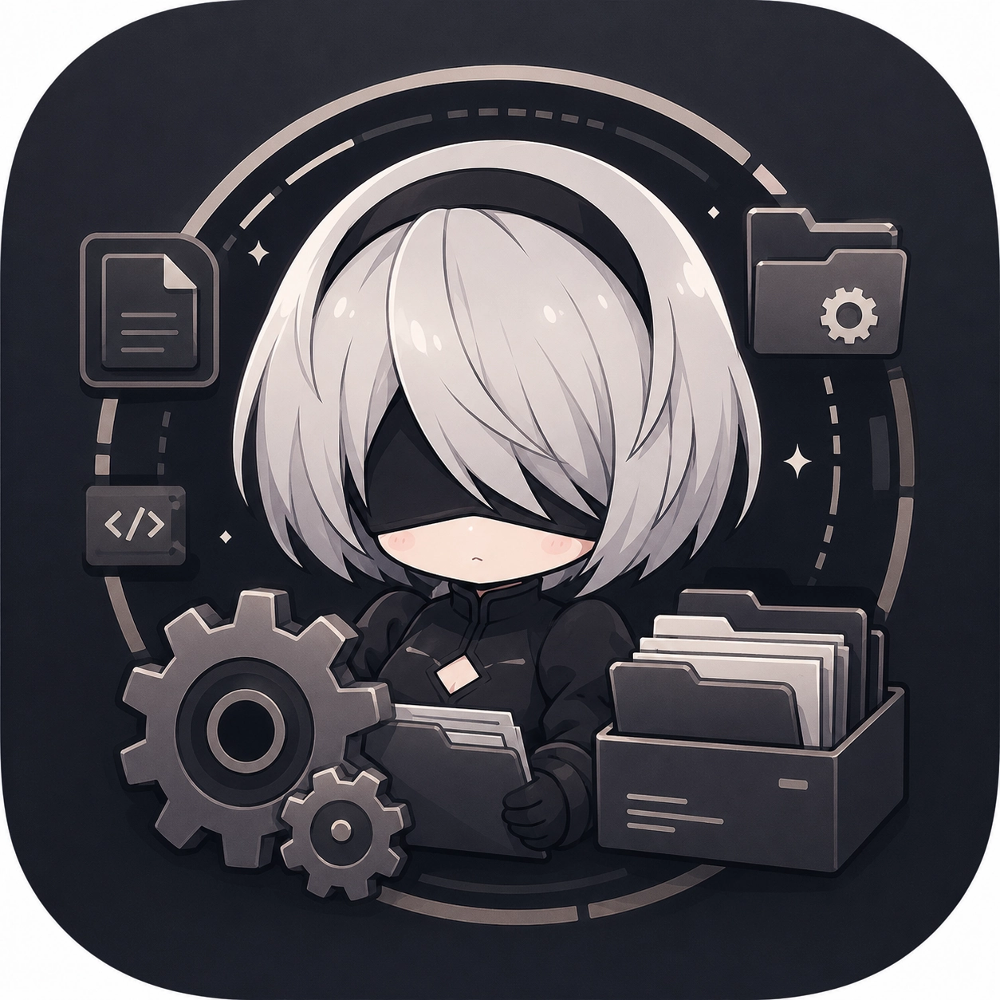

FPS Boost
5 presets from Potato to Ultra. Unlock 120 FPS. Force Vulkan. Reduce thermal throttling and stuttering on any Android device.

Wuthering Waves Android Config Toolkit — Boost FPS, reduce lag, unlock 120 FPS, and tune graphics on your Android device. Includes Smart Auto-Optimization, Pity Tracker, Battle Stats, and full CVar editor.
5 presets from Potato to Ultra. Unlock 120 FPS. Force Vulkan. Reduce thermal throttling and stuttering on any Android device.
Analyzes your device's GPU, RAM, FPS, and thermal data — scores 0-100 via Smart Brain algorithm, recommends the best preset for your hardware.
Multi-round benchmark loop: deploys a preset, captures FPS via logcat, adjusts settings, and re-deploys until your target FPS is reached — up to 5 rounds.
Fine-tune shadow quality, SSR, bloom, fog, chromatic aberration, outlines, HZB occlusion, texture streaming pool, anisotropic filtering, and more.
Full INI editor with auto-sync and hash reconciliation. Backed by a database of 3100+ CVars extracted from the game binary.
Per-file selection for backups. Auto-backup before every deploy with a scope dialog — choose all 5 INIs or only the files being overwritten.
ADB (in-app wireless), Shizuku, Root, or SAF. No PC required. No root required for ADB or Shizuku modes.
Fetches your gacha history from Kuro Games' official API. Calculates soft pity (66 character / 57 weapon), hard pity, 50/50 and 75/25 status per banner.
Parses Client.log for combat analytics: dodges (forward, back, counter), deaths, echo skills used, stamina consumed, teleports, and more.
Adaptive hash patching preserves ModifyCount, unknown fields, and formatting. Snapshot + Reconcile detects concurrent game access. Atomic writes via .new temp + mv rename.
Five tiers optimized for low-end to flagship Android devices. Each preset adjusts screen resolution, shadow quality, SSR, view distance, culling, and 80+ CVars.
| Preset | Screen% | Shadow | SSR | View Dist | Foliage LOD | Best for |
|---|---|---|---|---|---|---|
| POTATO | 50% | Off (128) | Off | 0.3 | 0.4 | 2-4 GB RAM, low-end GPUs |
| PERFORMANCE | 60% | Off | Off | 0.5 | 0.7 | 4-6 GB RAM, mid-range GPUs |
| BALANCED | 80% | Medium | Low | 1.5 | 2.0 | 6-8 GB RAM, Adreno 6xx / Mali-G7 |
| HIGH | 100% | High | High | 2.0 | 2.5 | 8-12 GB RAM, Adreno 7xx |
| ULTRA | 100% | Epic | Ultra | 3.0 | 3.0 | 12+ GB RAM, Adreno 8xx / flagship |
The Smart Brain algorithm analyzes your device's Client.log and scores each preset from 0 to 100 based on real hardware signals:
| Signal | Impact on Score | Why it matters |
|---|---|---|
| 🖥 GPU tier | ±30 | Flagship GPUs handle higher settings |
| 💾 RAM | ±15 | More RAM = larger texture pools, smoother gameplay |
| ⚡ Vulkan API | +8 | Vulkan reduces CPU overhead on supported devices |
| 📉 FPS drops | −6 to −18 | Consistent FPS loss indicates thermal or GPU limit |
| 🌡 Thermal events | −5 to −20 | Throttling = immediate performance loss |
| 💥 GPU OOM | −12 to −30 | Out of memory = crashes and instability |
| 🔄 Frame drops | −5 to −10 | Micro-stutters hurt gameplay feel |
| 🚫 Forbidden CVars | −5 each | Some CVars are stripped by the engine |
Recommended preset by score: Ultra ≥80 High ≥70 Balanced ≥40 Performance <40 Potato ≤20
Choose how the app connects to your game files. ADB and Shizuku do not require root.
In-app ADB wire protocol — no external binary or PC needed
No RootElevated shell access via Shizuku API
No RootDirect su -c shell via ProcessBuilder
Storage Access Framework — read/write only, no shell access
LimitedWuWaConfig tries to avoid detection of .ini file modifications by the game.
KuroConfigMonitor.hash formatting, ModifyCount, and unknown fields. It never increments ModifyCount, writes atomically via .new temp files with mv rename, and auto-syncs hash state on every connect. The app only modifies existing game config files and leaves no digital footprint. The game's only integrity check is the hash file, which is updated to match the actual INI content.Client.log, fetches your full pull history from Kuro Games' official gacha API, and shows per-banner pity predictions. It calculates soft pity thresholds (pulls 66+ for character banners, 57+ for weapons), hard pity (80 character, 70 weapon), and guarantee status (50/50 for character, 75/25 for weapons). Results are cached locally with a 12-hour TTL.| Layer | Technology |
|---|---|
| Language | Kotlin 1.9.22 |
| UI Framework | Jetpack Compose + Material 3 |
| Architecture | MVVM (single ViewModel + StateFlow) |
| Navigation | Jetpack Navigation Compose (14 routes) |
| Image Loading | Coil |
| Video Playback | Media3 ExoPlayer |
| ADB Protocol | In-app implementation (no external ADB binary) |
| Serialization | Gson |
| Build System | Gradle + AGP 8.2.2 |
| Min SDK / Target | 26 / 34 |
| Source Lines | ~13,500 across 50 Kotlin files |